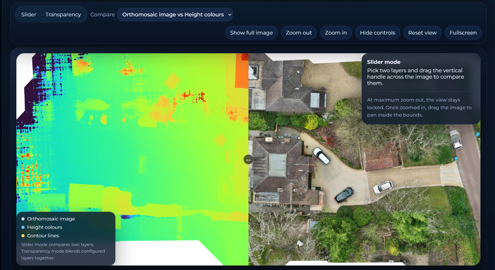
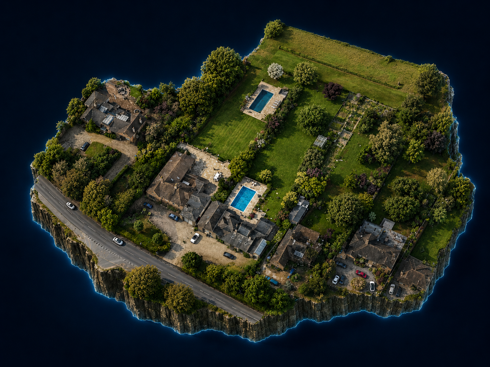

FutureScaping Labs
SiteView demo
Deliverables-led workspace
SiteView
A client-facing route through survey outputs, mapped layers, planning imagery and downloadable evidence, presented in the same polished shell as the monitoring demo.
A practical evidence route through orthomosaic, height layers, planning visuals and supporting outputs, presented in the same clear shell as the rest of the demo suite.
Workspace role
SiteView evidence route
Offline route through orthomosaic, DSM, contours and rendered review outputs.


What this demo shows
Evidence layers and planning outputs in one route
This SiteView variant is arranged as a client-facing evidence pack, combining mapped outputs, rendered material and download-ready layers inside the same presentation shell.
Core use
Bring survey outputs into one client workspace
The emphasis is on showing how orthomosaic, height layers and planning visuals can be reviewed together instead of being split across loose files.
Key value
Turn raw capture into something usable
This route shows how drone outputs become material that designers, planners and clients can actually work with.
Why it matters
Keep context, visuals and downloads together
Instead of explaining layers, visuals and PDFs separately, the interface keeps the whole pack moving in one simple visual story.

3D context Floating terrain and building massing for quick site understanding. Orthomosaic
Base site image for orientation, briefing and design review.
Orthomosaic
Base site image for orientation, briefing and design review.
 Height colours
Level-reading layer to support site understanding and design discussion.
Height colours
Level-reading layer to support site understanding and design discussion.
 Contours
Clean contour overlay for landform explanation and briefing.
Contours
Clean contour overlay for landform explanation and briefing.
What it shows
A deliverables route: survey layers, planning visuals and downloadable supporting material in one place.
Offline compromise
This version favours stable local evidence panels over live web-linked viewers and panorama tools.
How it is used
Use it to show how raw drone outputs become something designers, planners and clients can actually work with.